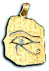

Prescriptions


Prescription writing goes back a long way. The superscription is usually taken to be an abbreviated form of the Latin recipe = take, but could also be a representation of the Eye of Horus, supposed to enlist his aid in making the drug work!
| 10 Law index |
| |
copyright
Massey University
|